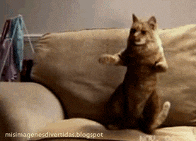

Resumen 🤓
Soy un entusiasta de la tecnología con una licenciatura en Estudios Avanzados de Gatos de la
Universidad de Miauville, complementada con diplomados en Criptozoología Aplicada al Estudio del
Unicornio y Tecnología Avanzada en Exorcismos. Además, poseo un magíster en Astronomía Culinaria y
un profundo conocimiento en Filosofía del Humor Extraterrestre. Mi pasión por lo inusual y lo
innovador me impulsa a buscar oportunidades para aplicar mis habilidades únicas en proyectos que
desafíen los límites, ¡y qué mejor lugar que la NASA para explorar las fronteras finales del
conocimiento!
Formación 📚
-
Formación Académica
- Licenciatura en Estudios Avanzados de Gatos, Universidad de Miauville, EE.UU.
-
Diplomados
- Criptozoología Aplicada al Estudio del Unicornio, Universidad Mágica de Hogwarts, Reino
Unido
- Tecnología Avanzada en Exorcismos, Universidad Paranormal de Transilvania, Rumania
-
Magíster
- Astronomía Culinaria, Universidad del Espacio Gastronómico, Marte
- Filosofía del Humor Extraterrestre, Universidad Intergaláctica de Risas, Alpha Centauri
Esta singular formación académica me ha permitido desarrollar habilidades únicas y una perspectiva
fresca para abordar desafíos técnicos y contribuir con creatividad en proyectos innovadores, incluso
en entornos tan especiales como el de la NASA.
Intereses 🌍
¡Hola, mundo! Soy un apasionado de la tecnología con una fascinación peculiar por la astrobiología
felina y la criptozoología aplicada a los unicornios. Imagínate una imagen mía con bata de
laboratorio, tratando de traducir maullidos en la Universidad de Miauville, mientras un unicornio
curioso observa desde una distancia mágica. O quizás otra imagen donde me veas en una convención
galáctica de ciencia-ficción, debatiendo sobre tecnología alienígena con un disfraz de
extraterrestre un tanto torpe. Y no puedo olvidar la escena en la Feria Internacional de Inventos
Extraños y Maravillosos, donde presento mi último dispositivo para rastrear huellas de unicornio con
una sonrisa de satisfacción y una pizca de incredulidad en los rostros de los espectadores. Mi
enfoque humorístico y mi amor por lo inusual me llevan a explorar nuevos horizontes en la ciencia y
la tecnología, siempre con una buena dosis de diversión y creatividad.


